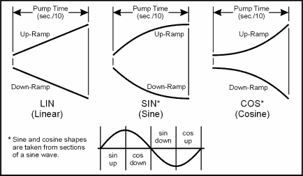

iTest User's Guide
These VCL commands and functions are intended to be used with arrays that were sourced from a .ary file. These will not work with virtual array channels, unless otherwise noted in the description.
Sets all elements of an array in memory to zero.
Syntax
CLEARARRAY <ArrayName>
Parameters
arrayname: The name of an array file without the (.ary) file extension that has been loaded into memory. This cannot be parameterized by using a local variable or iTest channel to store the name of the file. Do not surround the filename with double-quotes even though it is referenced as a literal string.
Loads the values from an array file into memory. If the array filename matches the name of a virtual array channel, then instead of loading the file into memory, it will populate the elements of the channel from the array file. If no such file exists, the LOADARRAY command creates the array in memory, but the STOREARRAY command must be run to save the array in memory as an (.ary) file on the computer. The maximum number of array elements is 20,000 when loading an array into memory.
Syntax
LOADARRAY <ArrayName> <Size>
Parameters
arrayname: The name of an array file without the (.ary) file extension. This cannot be parameterized by using a local variable or iTest channel to store the name of the file or the name of the virtual array channel. Do not surround the filename with double-quotes even though it is referenced as a literal string.
size: The number of elements available in the array. iTest will reserve enough memory to support this number of elements.
Returns a value from an element of an array that has been loaded into memory using the LOADARRAY VCL command.
Syntax
readarray(<ArrayName> <Element>)
Parameters
arrayname: The name of an array file without the (.ary) file extension that has been previously loaded into memory. This cannot be parameterized by using a local variable or iTest channel to store the name of the file. Do not surround the filename with double-quotes even though it is referenced as a literal string.
element: An element is also referred to as an "array index". This parameter defines the element of the array to be read from memory. Only floating point values can be used. The index starts at zero and floating point values are truncated to integers.
Example
+0.0 SET voNum1 readarray("newArrayFile" 1)
* sets the voNum1 channel value to the contents of element 1 in the newArrayFile array stored in memory.
Stores a value in an element of an array that has been loaded into memory using the LOADARRAY VCL command.
Syntax
SETARRAY <ArrayName> <Element> <Value>
Parameters
arrayname: The name of an array file without the (.ary) file extension that has been previously loaded into memory. This cannot be parameterized by using a local variable or iTest channel to store the name of the file. Do not surround the filename with double-quotes even though it is referenced as a literal string.
element: An element is also referred to as an "array index". This parameter defines the element of the array to be set in memory. Only floating point values can be used. The index starts at zero and floating point values are truncated to integers.
value: Only floating point values and literal string values can be used. Literal string values must be surrounded by double-quotes.
Example
+0.0 SETARRAY newArrayFile 1 200.2
Stores the contents of an array in memory or a virtual array channel to an array (.ary) file.
Syntax
STOREARRAY <ArrayName|ChannelName>
Parameters
arrayname|channelname: The name of an array file without the (.ary) file extension or the name of a virtual array channel. This cannot be parameterized by using a local variable or iTest channel to store the name of the file or the name of the virtual array channel. When referencing an array file, do not surround the filename with double-quotes even though it is referenced as a literal string.
Examples
+0.0 STOREARRAY newArrayFile +0.0 STOREARRAY voaSysArrayChan1
Turns on the global limits flag or if an iTest channel is given, this command sets the given channel's Limits Active RDB field value to 1.
Syntax
Limits Activate All|<Channel>
Parameters
All | channel: This parameter is either the string "All" or an iTest channel name. If this parameter is "All", the global limits flag is turned on. To turn on a specific channel's limits use the channel's channel, customer, or module name as this parameter.
Examples
Limits Activate All Limits Activate spdDt1Dyno
Turns off the global limits flag or if an iTest channel is given, this command sets the given channel's Limits Active RDB field value to 0.
Syntax
Limits Deactivate All|<Channel>
Parameters
All | channel: This parameter is either the string "All" or an iTest channel name. If this parameter is "All", the global limits flag is turned off. To turn off a specific channel's limits use the channel's channel, customer, or module name as this parameter.
Examples
+0.0 Limits Deactivate All +0.0 Limits Deactivate spdDt1Dyno
Activates all channels that have been deactivated individually. To be activated a channel must have limits defined and it's Limits Active RDB field value must be 0. If this criteria is met, the channel's Limits Active RDB field value is set to 1.
Syntax
Limits Reactivate
Starts a log that was previously defined in the Test Manager. STARTLOG can optionally take a virtual output channel name as a second argument to track the progress of the log:
1 = Log started
0 = Idle
-1 = Error: unable to start log due to missing log order list (.LOL) file
-2 = Error: log already running
Syntax
STARTLOG <LogName> [Status]
Allows a user to stop a running average or transient log. This command stops the running log and saves any accumulated data.
Syntax
STOPLOG <LogName>
The principal use for this VCL command is to start another procedure from within the currently executing procedure that issued this command. In this context, after an EXECUTE command is issued, the issuing procedure will wait until the child procedure is finished running before continuing to its next instruction.
 |
NOTE: | Parent procedures inherit the priority level of the procedures they execute. |
Syntax
EXECUTE <Procedure>
Parameters
procedure : The name of the procedure to be executed or a virtual string channel that contains the name of the procedure to be executed.
Example
+0.0 EXECUTE SysInit * executes the SysInit procedure
Stops the currently running procedure that issued this VCL command before its normal end. Typically, this command is used when a conditional value evaluates to true.
Syntax
EXIT
Sends a message to an iTest Windows process. The MESSAGE command is one of the most commonly used commands in the VCL language. Many iTest processes support a variety of mailslot commands that enable you to perform test system functions.
Syntax
MESSAGE "\\Machine\Mailslot\Process>>Message"
* Shortened syntax to send messages only to the local machine. MESSAGE "Process>>Message"
Parameters
machine: [Optional] The name of the Windows system to send the message to. Usually, this is a period, which references the local machine. For systems with multiple Windows systems connected, this may be the name of another machine. If using the shortened syntax, this parameter and the <mailslot> parameter are not included in the message and the message is sent to the local machine. This parameter must be included if using the longer syntax.
mailslot: [Optional] This part of the message is fixed. It should always be mailslot. If using the shortened syntax, this parameter and the <machine> parameter are not included in the message. This parameter must be included if using the longer syntax.
process: Name of the iTest Windows process.
message: Message to be sent to the process.
 |
WARNING: | Do not include a semi-colon in any messages to Data_Engine. Any text following the semi-colon, including the semi-colon, will not be included as part of the message. |
The MESSAGE command allows for channel substitution so that current channel values can be included as part of the message. This command also accepts macros defined in the config.ini file, such as $DATADIR.
Channel substitution is done by surrounding a channel's name with %< >%. If the channel is a virtual string, the string value is included in the message. Otherwise, a number, with precision as specified for the iTest channel, is included in the message. If the channel is an array channel, the array index is specified through the use of magic brackets (e.g., %<channelname[index]>%).
ASCII characters is done by surrounding an ASCII code with curly braces.
 |
CAUTION: | If the substituted string value from a virtual string channel matches the name of another virtual string channel, then the second channel's string value will be substituted into the message. |
Examples
* Example: channel substitution
+0.0 MESSAGE “\\.\mailslot\Softpanel>>The value of DYNO_FDBK = %<DYNO_FDBK>%"
* Example: double channel substitution due to a virtual string name
* given vsChan1 channel value is "vsChan2" and vsChan2 channel value is "HelloWorld"
+0.0 MESSAGE "\\.\mailslot\Softpanel>>The returned string is %<vsChan1>%. We expect HelloWorld."
* Example: channel substitution for an array channel
+0.0 MESSAGE "\\.\mailslot\Softpanel>>The value of VOA_CHANNEL = %<VOA_CHANNEL[i]>%"
* Example: includes macro
+0.0 MESSAGE "\\.\mailslot\Softpanel>>iTest is installed at: $SYSTEMDIR"
* Example: shortened syntax
+0.0 MESSAGE "Softpanel>>iTest is installed at: $SYSTEMDIR"
* Example: driver on non-distributed system
+0.0 MESSAGE "\\.\mailslot\EtherCAT_1>> SetLogLevel:All"
* Example: driver on distributed system
+0.0 MESSAGE "\\.\mailslot\Data_Engine>> RTDriverMsg EtherCAT_1 SetLogLevel:All"
* Example: embedding an ASCII character 13 (enter)
+0.0 MESSAGE "\\.\Mailslot\Softpanel>>LIFTOFF IN PROGRESS,{13} PLEASE WAIT"
Driver mailslot messages are communicated differently depending on whether the message is being sent to a distributed or non-distributed type system (i.e., IBS vs. RTX_DIST system types for example).
For non-distributed systems, the message is sent directly to the driver's defined mailslot.
For distributed systems, the message must first be routed to Data_Engine using the RTDriverMsg mailslot message. Data_Engine then passes the message to the indicated driver on the distributed system.
Pauses the currently executing procedure for the given time period. The defined time period can be in increments as small as one one-hundredth of a second (e.g. 0.01 seconds).
Syntax
PAUSE <Time>
Parameters
time: Using a channel name or local variable as this parameter will make the procedure pause based on a dynamic value. E.g. setting the channel's value to 0 will end a PAUSE.
Stops running procedures that have a level assignment less than the given value, except for the procedure that issued the PREEMPT command.
Syntax
PREEMPT <Level>
Execute a Python script. The calling procedure is suspended until the script completes or the specified timeout period elapses. The return value from the script is placed into the specified channel. If the timeout period is less than zero, then there is no timeout and the procedure will only resume when the script has completed.
Syntax
PYEXEC <Script string>, <Return value channel>, <Timeout period, in seconds>
Parameters
script string: A string (or string channel) specifying the python file and function (with parameters) within that file to call. This is case-sensitive.
return value channel: The return value from the script will be stored into this channel. This channel can be a number or a string, the return value will be converted to correct format. If the script has no return value, then a string channel will be set to empty and a numeric channel will be set to zero.
timeout period: The maximum amount of time, in seconds, to wait for the script to complete. If the script doesn't complete in this amount of time, then the return value channel does NOT get set to a new value.
Example
+0.0 PYEXEC "pyExample1 square(voDmo1Ch5)", voReturnChan, 10
Execute a Python script. The calling procedure continues execution immediately after the script is started. It does NOT wait for the script to complete like PYEXEC.
Syntax
PYSPAWN <Script string>
Parameters
script string: A string(or string channel) specifying the python file and function (with parameters) within that file to call. This is case-sensitive.
Causes the executing procedure to exit and return a value. The executing procedure must be defined to return a value or string.
Syntax
RETURN <ReturnValue>
Parameters
returnvalue: The returned value can be the result of an expression, a literal value, a local variable’s value, another channel’s value, or the returned value from a VCL function.
Sets the value of a channel to the result of an expression, a literal value, a local variable’s value, another channel’s value, or the returned value from a VCL function. Literal string values must be surrounded by double-quotes.
Syntax
SET <ChannelName> <Expression>
The SET command allows for channel substitution in the literal string when setting string channels. This allows you to build up string values using a series of referenced channels without using concat.
The character pair \" is considered to be the beginning of an embedded string, except in the case of "\\.\mailslot\". All other instances of \" will have the backslash before the double-quotes trimmed off.
Examples
+0.0 SET voNum1 voNum2 !! voNum1's value is set to the current value of voNum2 +0.0 SET voNum1 voNum2 + 3 !! voNum1's value is set to the current value of voNum2 + 3 +0.0 SET voNum1 round(voNum2) !! voNum1's value is set to the value returned from the round() function +0.0 SET vsStr1 "Hello\" !! vsStr1's value is set to Hello +0.0 SET vsStr1 "\\.\mailslot\" !! vsStr1's value is set to \\.\mailslot\ +0.0 SET vsStr1 "%<vsStr2>% %<vsStr3>%%<voNum2>%" !! vsStr1's value is set to a string combining the contents of the vsStr2, vsStr3, and voNum2 channels
Starts another procedure that executes in parallel with the parent procedure. After this command is issued, the procedure will continue on to the next instruction without waiting for the spawned procedure to complete.
By default, a new instance of the child procedure will be started even if one is already running, unless AllowMultipleProcInstances=FALSE is present in the powertek.ini file.
Syntax
SPAWN <Procedure>
Parameters
procedure : The name of the procedure to be spawned or a virtual string channel that contains the name of the procedure to be spawned.
Suspends the currently running procedures until a given iTest channel's value becomes non-zero.
Syntax
SUSPEND [Level] controlparam=<ChannelName>
Parameters
level: Optional parameter. If given, only running procedures that have a level assignment less than or equal to this parameter are suspended, except for the procedure that issued the SUSPEND command. If this parameter is not given, only the procedure that issued the SUSPEND command is suspended. This parameter can also be a returned value from a VCL function.
ChannelName: iTest channel that is monitored. Use of virtual output array channels is not supported for this parameter.
Defines a local float variable. Its scope is defined only during the execution of the procedure and is limited to the procedure that issued the command.
Syntax
VCLNUM <label>
Defines a local string variable. Its scope is defined only during the execution of the procedure and is limited to the procedure that issued the command.
Syntax
VCLSTR <label>
|
CAUTION: | Procedures do not wait for a ramp cycle to complete before continuing to the next instruction. |
Example Ramp Shapes

Suspends the ramp cycle for a given iTest channel.
Syntax
HOLDRAMP <ChannelName>
Performs a linear ramp of an iTest channel's value from its current value to a target value over a given period of time.
Refer to the diagram above for a graphical example.
Syntax
RAMP <ChannelName> <TargetValue> <Seconds>
Parameters
channelname: A local variable can not be passed as this parameter.
targetvalue: A numeric constant, a local variable, or a channel, module, or customer name can be used.
Performs a cosine-shaped ramp of an iTest channel's value from its current value to a target value over a given period of time.
Refer to the diagram above for a graphical example.
Syntax
RAMPCOS <ChannelName> <TargetValue> <Seconds>
See the RAMP VCL command entry for an explanation of the command parameters.
Performs a sine-shaped ramp of an iTest channel's value from its current value to a target value over a given period of time.
Refer to the diagram above for a graphical example.
Syntax
RAMPSIN <ChannelName> <TargetValue> <Seconds>
See the RAMP VCL command entry for an explanation of the command parameters.
Ramps a given iTest channel based on setpoints from a tab-delimited (default) 2D table (.tbl) over a period of time. The ramp stops after the final row is read. The parameters for this command allow for configuring the table, starting row, column, and number of rows per second to use.
The table must be loaded into memory, using the TableLoad() VCL function, prior to running the RampTable command.
Syntax
RAMPTABLE <ChannelName> <File> <Row> <Column> <Rows/Sec>
Parameters
channelname: iTest channel to be ramped.
file: Name of the tab-delimited 2D table file (.tbl) used to provide setpoints for the channel ramping. Do not include the file extension or filepath for the filename.
row: The first row in the table to begin using for setpoints.
column: The column in the table to use for setpoints.
rows/sec: The number of rows to use per seconds for setpoints.
Example
VCLSTR MyTable !! define a local variable for the table name SET MyTable "SpeedTable" !! set the local variable to the table name LOADTABLE MyTable 0 0 !! load the table into memory, assumes default filepath and extension RAMPTABLE spdDt1Dyno MyTable 1 10 0.5 * ramps the spdDt1Dyno channel using the 10th column, starting on row 1 at a rate of 1 row per 2 seconds PAUSE 100 !! given 50 rows in the table, wait for 100 seconds to ramp the channel CLEARTABLE MyTable !! optional; clears the table from shared memory
Resumes a ramp cycle for a given iTest channel that was suspended by the HOLDRAMP VCL command.
Syntax
RESUMERAMP <ChannelName>
Stops a ramp cycle for a given iTest channel.
Syntax
STOPRAMP <ChannelName>
Resets a timer channel to its default starting value. If the timer channel is already incrementing, the value is reset and the timer channel will continue to increment. The default starting value is defined in the timer channel's Starting Value RDB field.
Syntax
TIMERRESET <ChannelName>
Sets the value at which a timer channel begins counting at. If the timer channel is already incrementing, then the timer is set to the given value and continues to increment.
Syntax
TIMERSETSTART <ChannelName> <Value>
Starts a timer channel incrementing. It begins counting from the value it had when the last instance of the TIMERSTOP VCL command was issued, regardless of any SET VCL commands or mailslot messages that may have been issued in the interim. To change the start value of a timer channel refer to the TIMERSETSTART VCL command.
Syntax
TIMERSTART <ChannelName>
Stops a timer channel.
Syntax
TIMERSTOP <ChannelName>